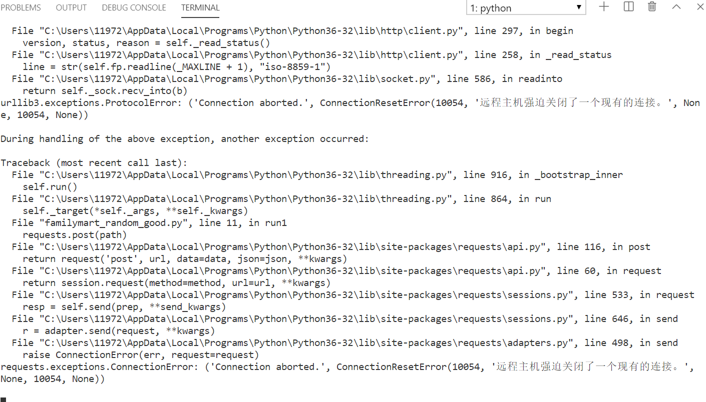

Python多线程：Family数据批量生成¶
本篇日志记载我使用python批量生成数据添加到 全家Family模拟网站 数据库上的过程。
使用pip工具安装库¶
pip install requests
数据添加任务¶
表内逻辑关系¶
生产日期(makedate) ＋ 保质期(guarantee) = 过期日期(enddate)
当前日期(nowdate) > 过期日期(enddate) => 过期 (state=’过期’)
可售数量(total) = 统计在售数量(state=’在售’)
后端逻辑补全¶
创建个体时计算过期日期¶
@PostMapping("/add")
public Response add(@RequestParam String goodid,@RequestParam String goodname,@RequestParam String makedate){
try{
Good a=new Good();
a.setGoodID(goodid);
a.setGoodname(goodname);
a.setMakedate(makedate);
a.setState("在售");
#根据保质期计算过期日期
SimpleDateFormat formatter = new SimpleDateFormat("yyyy-MM-dd");
Date mkdate=formatter.parse(makedate);
Calendar cal = Calendar.getInstance();
cal.setTime(mkdate);
cal.add(Calendar.DATE, goodService.getguarantee(goodname));
Date eddate=cal.getTime();
String end=formatter.format(eddate);
a.setEnddate(end);
return genSuccessResult(goodService.addone(a));
}catch (Exception e){
return genFailResult(e.toString());
}
}
判断过期¶
public class GoodService {
@Autowired
GoodRepository goodRepository;
public void allguarantee(){
#传入当前时间
Date now=new Date();
SimpleDateFormat formatter = new SimpleDateFormat("yyyy-MM-dd");
String nowstr=formatter.format(now);
goodRepository.allguarantee(nowstr);
}
}
@Repository
public interface GoodRepository extends JpaRepository<Good,Integer> {
@Transactional
@Modifying
@Query(value = "update good set state='过期' where enddate<?1", nativeQuery = true)
public void allguarantee(String now);
}
统计在售数量¶
@Transactional
@Modifying
@Query(value = "update goodtype set total=(SELECT count(*) from good where state='在售' and typex=good_name)", nativeQuery = true)
public void updatesale();
批量生成数据¶
随机生成goodtype表中保质期¶
def run2(a,b):
path="http://47.100.107.158:80/goodtype/setguarantee?"+"goodname="+a+"&guarantee="+b
requests.post(path)
time.sleep(2)
def mkguarantee():
#随机生成3~30的整数
return random.randint(3,30)
def guarantee():
resp=requests.get("http://47.100.107.158/goodtype/all")
data=json.loads(resp.text).get("data")
pool=[]
for i in data:
goodname=i.get("type")
print(goodname,mkguarantee())
pool.append(threading.Thread(target=run2,args=(goodname,str(mkguarantee()))))
for i in pool:
i.start()
for i in pool:
i.join()
return
批量生成good个体¶
多线程添加结果示意图¶

最终代码¶
def run1(a,b,c):
path="http://47.100.107.158:80/good/add?"+"goodid="+a+"&goodname="+b+"&makedate="+c
requests.post(path)
time.sleep(1)
def mkdate():
a=(2019,12,1,0,0,0,0,0,0)
b=(2019,12,20,23,59,59,0,0,0)
start=time.mktime(a) #生成开始时间戳
end=time.mktime(b) #生成结束时间戳
t=random.randint(start,end)
date_touple=time.localtime(t)
#输出为"2019-12-09"格式
date=time.strftime("%Y-%m-%d",date_touple)
return date
def good():
resp=requests.get("http://47.100.107.158/goodtype/all")
#解析json
data=json.loads(resp.text).get("data")
#枚举商品种类
for i in range(0,len(data)):
pool=[]
#随机个数在10~99之间
for j in range(0,random.randint(10,99)):
date=mkdate()
#构造商品编号
goodid='F'+str(i+1000)[1:]+str(random.randint(0,99)+100)[1:]+date[0:4]+date[5:7]+date[8:10]
goodname=data[i].get("type")
print(goodid,goodname,date)
pool.append(threading.Thread(target=run1,args=(goodid,goodname,date)))
for j in pool:
j.start()
for j in pool:
j.join()
return
仔细看会发现这里的多线程在外层循环内，这是最终的结果。
探究的第一步-爆炸¶
将所有requests加入线程池后开始
def good():
resp=requests.get("http://47.100.107.158/goodtype/all")
#解析json
data=json.loads(resp.text).get("data")
pool=[]
#枚举商品种类
for i in range(0,len(data)):
#随机个数在10~99之间
for j in range(0,random.randint(10,99)):
date=mkdate()
#构造商品编号
goodid='F'+str(i+1000)[1:]+str(random.randint(0,99)+100)[1:]+date[0:4]+date[5:7]+date[8:10]
goodname=data[i].get("type")
print(goodid,goodname,date)
pool.append(threading.Thread(target=run1,args=(goodid,goodname,date)))
for i in pool:
i.start()
for i in pool:
i.join()
return
得到的结果是：

输出速度 快到爆炸 ，根本看不清每一条
但三秒后，就开始出现某些很长的重复项 ，啊，是系统报错输出！
RuntimeError: can’t start new thread
查阅stackoverflow，发现是本机线程数到达了上限，所以无法并发新的线程， 上限大概是10^2 ~ 10^3数量级。
这可怎么办，我的总request数期望在 (10+99)/2*727=39621 ，但无法同时并发
探究的第二步-求稳但内心拒绝¶
于是我退了一步，尝试了现在的 外层for循环+单组多线程 ，但还是让我无法忍受， 毕竟每一组要近3s，而总共有七百多组。
探究的第三步-嵌套多线程¶
将外层循环也改为多线程并发
def run3(a,b):
pool=[]
for j in range(0,random.randint(10,99)):
date=mkdate()
goodid='F'+str(a+1000)[1:]+str(random.randint(0,99)+100)[1:]+date[0:4]+date[5:7]+date[8:10]
goodname=b
print(goodid,goodname,date)
pool.append(threading.Thread(target=run1,args=(goodid,goodname,date)))
for j in pool:
j.start()
for j in pool:
j.join()
time.sleep(10)
def good():
resp=requests.get("http://47.100.107.158/goodtype/all")
data=json.loads(resp.text).get("data")
wpool=[]
for i in range(0,len(data)-1):
wpool.append(threading.Thread(target=run3,args=(i,data[i].get("type"))))
for i in wpool:
i.start()
for i in wpool:
i.join()
虽然很显然不能解决线程数超标的问题 ，但我足够沙雕，想要试一试嵌套多线程能否达到优化的效果， 然后出现了神奇的景象

先是和先前一样的爆炸快输出, 3秒后很快开始夹杂了线程报错。
大概运行了10s后， 外层循环的七百多个线程逐一坏死。
然后整个mysql也因为巨量IO变得一顿一顿的， 于是我赶紧抓住机会对Good表执行了deleteall操作，爽！！